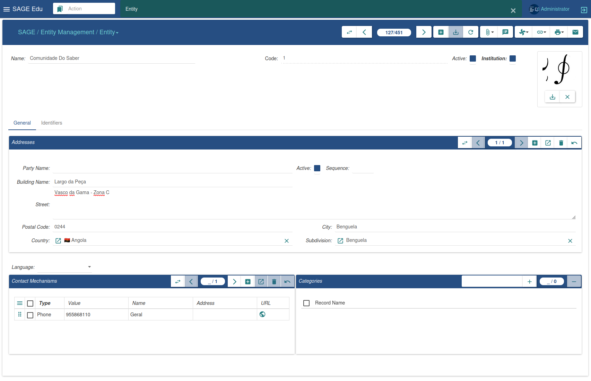
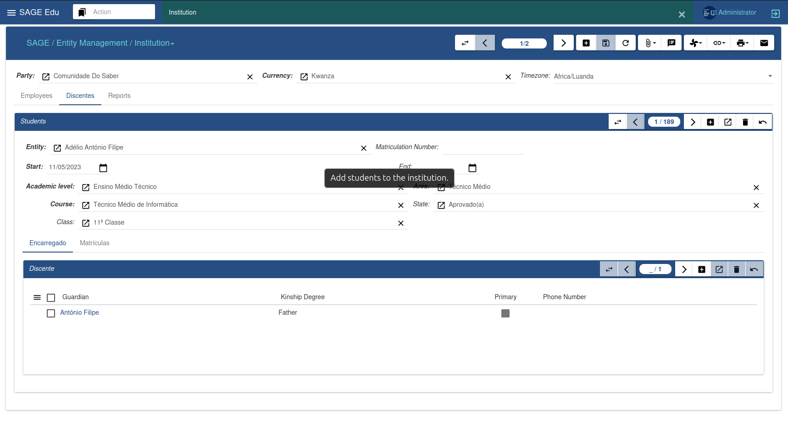
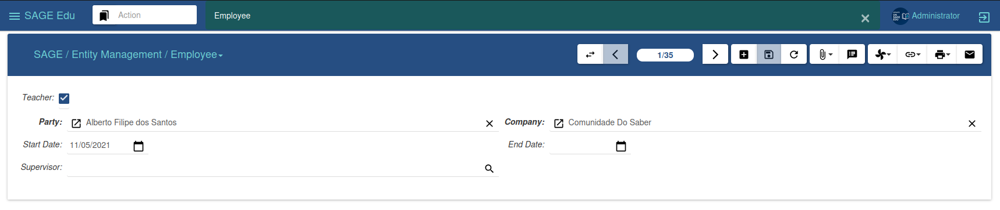
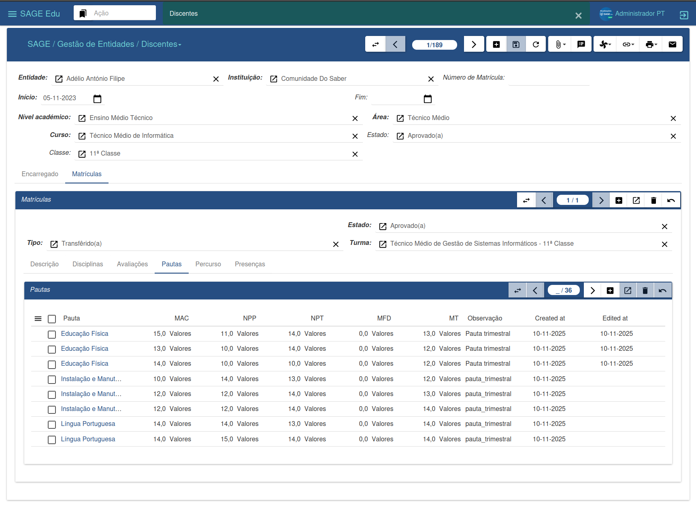

Gestão de Entidades
O menu de Gestão de Entidades tem como função principal gerir as entidades no sistema. Cada entidade pode representar pessoas singulares ou jurídicas, organizações, associações, negócios e qualquer tipo de grupo que possa ser tratado como uma entidade no sistema.
Cada entidade pode ter associado:
- Contactos
- Endereços
- Categorias
- Identificadores
- Tipo (Singular ou Corporativa)
Entidades
Para criar uma nova entidade:
-
Clique em “Novo”
-
Preencher os campos obrigatórios
-
Clique em “Salvar”, e a nova entidade é criada.
Após criar a entidade, pode adicionar contactos, endereços, idioma, entre outras informações complemetares.

Instituição
Para criar uma nova instituição:
-
Certifique-se de que existe uma entidade previamente criada
-
Clique em “Novo”
-
Pesquise a entidade a associar
-
Preencha os restantes dados
-
Clique em “Salvar”, e a nova instituição é criada.

Funcionários
O sistema oferece duas formas de cadastrar funcionários:
-
Pela Instituição
- Menu: Instituição → Empregados
-
Pelo sub-menu Geral
- Menu: Funcionários
Para cadastrar:
-
Clique em “Novo”
-
Preencha os campos obrigatórios
-
Se a instituição não estiver selecionada, pesquise pela desejada
-
Clique em “Salvar”

Discentes
Para cadastrar um discnete:
-
Certifique-se de que existe uma entidade criada
-
Clique em “Novo”
-
Pesquise a entidade
-
Preencha os campos adicionais
-
Clique em “Salvar”
-
Confirme o registo

É possível visualizar:
-
Disciplinas
-
Avaliações
-
Pautas
-
Percurso académico